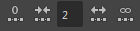

“节点编辑器”(Node Editor)菜单栏
“编辑”(Edit)菜单
- 简单模式
-
将选定节点的视图模式更改为简单模式，以便仅显示输入和输出主端口。有关“节点编辑器”(Node Editor)视图模式的详细信息，请参见节点视图模式。也可以通过工具栏图标或热键 1 执行相同操作。
也可以在“首选项”(Preferences)窗口中自定义该选项，并且节点会在下次创建“节点编辑器”(Node Editor)窗口时以简单模式显示。有关详细信息，请参见节点编辑器首选项。
- 已连接模式
-
将选定节点的视图模式更改为已连接模式，以便显示输入和输出主端口，以及任何已连接属性。有关“节点编辑器”(Node Editor)视图模式的详细信息，请参见节点视图模式。也可以通过工具栏图标或热键 2 执行相同操作。
也可以在“首选项”(Preferences)窗口中自定义该选项，并且节点会在下次创建“节点编辑器”(Node Editor)窗口时以已连接模式显示。有关详细信息，请参见节点编辑器首选项。
- 完全模式
-
将选定节点的视图模式更改为完全模式，以便显示输入和输出主端口，以及主节点属性。给定节点的主属性集基于属性的特性，例如，它们是可设定关键帧还是为动态。有关“节点编辑器”(Node Editor)视图模式的详细信息，请参见节点视图模式。也可以通过工具栏图标或热键 3 执行相同操作。
也可以在“首选项”(Preferences)窗口中自定义该选项，并且节点会在下次创建“节点编辑器”(Node Editor)窗口时以完全模式显示。有关详细信息，请参见节点编辑器首选项。
注： 如果“节点编辑器”(Node Editor)中无节点亮显（活动），则选择以上任一选项或使用其相应快捷方式将影响所有节点。 - 自定义模式(Custom Mode)
-
将选定节点的视图模式更改为其自定义属性视图。若要自定义为每个节点显示的属性列表，请在节点上单击鼠标右键，然后选择“编辑自定义属性列表”(Edit Custom Attribute List)。有关如何为每个节点自定义显示的属性列表的详细信息，请参见自定义节点属性列表。
您也可以通过工具栏图标或热键 4 切换到自定义模式。
也可以在“首选项”(Preferences)窗口中自定义该选项，并且节点会在下次创建“节点编辑器”(Node Editor)窗口时以自定义模式显示。有关详细信息，请参见节点编辑器首选项。
- Pin
-
如果固定某节点，则即使重新制图后该节点也保留在“节点编辑器”(Node Editor)视图中，并保持其位置不变。可以通过一步操作固定多个节点，方法为：选择多个节点，然后选择此选项。也可以通过热键 p 执行相同操作。
- 取消固定(Unpin)
-
如果固定某节点，则即使重新制图后该节点也保留在“节点编辑器”(Node Editor)视图中，并保持其位置不变。可以通过一步操作取消固定多个节点，方法为：选择多个节点，然后选择此选项。也可以通过热键 p 执行相同操作。
注： 如果“节点编辑器”(Node Editor)中无节点亮显（活动），则选择“固定”(Pin)或“取消固定”(Unpin)菜单项（或热键 P）将影响所有节点。
“视图”(View)菜单
- 框选全部
-
调整图表视图，使其适配编辑器中的所有对象。也可以使用热键 A。
- 框显当前选择
-
调整图表视图，使其适配编辑器中的所有选定对象。也可以使用热键 F。
- 放大
-
放大图表。也可以使用热键 =。
- 缩小
-
缩小图表。也可以使用热键 -。
提示： 如果缩小图表时发现难以辨认节点名称，请将鼠标悬停在节点上，将弹出包含节点名称的工具提示。
“书签”(Bookmarks)菜单
- 创建书签(Create bookmark)
-
选择此选项可以创建书签，以将当前节点图表存储为快速参考。
- 书签编辑器(Bookmark Editor)
-
选择此选项可以打开“书签编辑器”(Bookmark Editor)以编辑书签。有关编辑书签的详细信息，请参见在“节点编辑器”(Node Editor)中创建和使用书签。
- <书签名称>
- 该菜单下列出现有书签列表。选择书签名称可加载每个书签。也可以单击每个书签名称旁边的
 来重命名书签。
来重命名书签。
“选项卡”(Tabs)菜单
- 创建选项卡(Create Tab)
- 选择此选项可在节点编辑器中创建新选项卡。通过使用选项卡，可以可视化多个图表并同时编辑它们，从而最大限度地减少重新绘制的需要。
- 重命名活动选项卡(Rename Active Tab)
- 选择此选项可重命名当前的选项卡。按 Enter 键或在选项卡之外单击以提交更改。按 Esc 键取消操作。
- 关闭活动选项卡(Close Active Tab)
- 选择此选项可删除当前的选项卡。通过选择“还原上次关闭的选项卡”(Restore last closed tab)，可以还原已删除的选项卡。
- 关闭所有选项卡(Close All Tabs)
- 选择此选项可删除所有的选项卡，包括任何已去除的选项卡。空的节点编辑器保留有新的空选项卡。
- 还原上次关闭的选项卡
-
选择此选项可还原上次删除或关闭的选项卡。只能还原上次关闭的选项卡。
使用此菜单项可以还原已停靠的或已去除的选项卡。
- 重新停靠此选项卡(Re-dock this tab)
- 选择此选项可重新停靠已去除的选项卡，以便它在节点编辑器主窗口中重新显示为选项卡。
“选项”(Options)菜单
- 渲染样例(Render Swatches)
-
禁用此选项可以针对 Maya 的当前会话禁用“节点编辑器”(Node Editor)、“Hypershade”以及“属性编辑器”(Attribute Editor)中的样例渲染。
注： 禁用样例渲染后，所有现有样例就应停止更新。已绘制的样例仍然可见，但不会进行更新。也可以通过选择“窗口 > 设置/首选项 > 首选项 > 显示 > 渲染样例(启动)”(Windows > Settings/Preferences > Preferences > Display > Render swatches (startup))，在“首选项”(Preferences)窗口中设置该选项，您的设置在启动 Maya 后应用。例如，可以通过“首选项”(Preferences)窗口禁用该选项以在加载场景时提高性能，然后通过节点编辑器的“选项”(Options)菜单启用此选项以重新启用针对“节点编辑器”(Node Editor)会话的样例渲染。
- 创建时添加到图表(Add to Graph on Create)
- 启用此选项后，在场景中创建节点时，该节点同时将添加到“节点编辑器中”(Node Editor)。如果此选项处于禁用状态，只显示使用“节点编辑器”(Node Editor)（例如，使用 Tab 键创建或使用拖放创建；有关详细信息，请参见创建节点）创建的节点。也可以通过单击锁定 () 按钮以锁定视图来禁用此选项。有关详细信息，请参见锁定节点编辑器视图。
注： 也可以通过选择“窗口 > 设置/首选项 > 首选项 > 设置 > 节点编辑器”(Windows > Settings/Preferences > Preferences > Settings > Node Editor)来控制“同步节点编辑器/视口选择”(Sync Node Editor/Viewport Selection)和“创建时添加到图表”(Add to Graph on Create)选项。如果在“首选项”(Preferences)窗口中选择这些选项，则将在下次打开“节点编辑器”(Node Editor)时应用所做的更改。有关详细信息，请参见节点编辑器首选项。注： 也可以通过工作区标记菜单选择这些选项。有关详细信息，请参见节点编辑器标记菜单。
- 自动调整节点的大小(Auto-size Nodes)
- 选择此选项可以自动调整节点大小，使创建时每个节点的名称都完全可见。
- 添加制图模式(Additive Graphing Mode)
-
使用“添加制图模式”(Additive Graphing Mode)选项可以将节点网络添加到现有图表中。启用此选项、选择一个节点并单击
 、
、 和
和  图标之一，以对选定节点制图，并将其添加到现有网络中。也可以从“节点编辑器”(Node Editor)工作区标记菜单访问此选项。有关详细信息，请参见将节点图表添加到现有图表中和节点编辑器标记菜单。
图标之一，以对选定节点制图，并将其添加到现有网络中。也可以从“节点编辑器”(Node Editor)工作区标记菜单访问此选项。有关详细信息，请参见将节点图表添加到现有图表中和节点编辑器标记菜单。
- 默认固定所有节点(Pin all nodes by default)
- 选择此选项后，默认情况下会固定新创建的所有节点。有关固定的详细信息，请参见将节点固定到“节点编辑器”(Node Editor)视图。也可以通过工作区标记菜单选择此选项。
- 亮显选定对象上的连接(Highlight connections on selected)
-
选择此选项，以便在选择节点时可选择传入和传出连接线。处理复杂的节点图表时，此选项非常有用。
“显示”(Display)菜单
通过选择提供的任意选项，可以在“节点编辑器”(Node Editor)中自定义图表。
- 栅格
- 选择或取消选择此选项可启用和禁用栅格背景。
- 栅格捕捉(Grid Snapping)
- 启用该选项可将节点捕捉到栅格。
- 连接时的十字光标(Crosshair Cursor While Connecting)
-
启用此选项后，拖动连接线时将显示十字光标。
- 所有形状(All Shapes)/除着色组成员以外的所有形状(All Shapes Except Shading Group Members)/无形状(No Shapes)
-
在选项中进行选择以自定义要显示的形状。
- 一致的节点名称大小(Consistent node name size)
-
启用此选项后，节点名称的大小将与当前的缩放级别匹配。禁用此选项后，节点名称的大小将保持不变，甚至在缩小时也是如此。
- 变换(Transforms)
-
选择该选项以在图表中包含变换节点。
- 扩展到形状(Extend to shapes)
-
选择该选项以包含选定变换的子形状节点。
- 单位转化节点(Unit Conversion Nodes)
-
比较：显示和隐藏“单位转化节点”(Unit Conversion Nodes)
如果希望在连接使用不同单位类型的单元时在节点之间显示“单位转化节点”(Unit Conversion Nodes)，请启用此选项。默认情况下，节点编辑器显示连接节点之间的直接连接，从而简化图形并防止节点被任意移动。连接器上的双箭头指示存在转化节点。
默认情况下，此设置处于禁用状态，因此“单位转化节点”(Unit Conversion Nodes)将隐藏。
如果在节点编辑器中已存在单位转化节点时禁用“单位转化节点”(Unit Conversion Nodes)选项，则它们将立即隐藏。如果未显示单位转化节点，则显示单位转化节点可能需要对节点重新制图，以便您可以看到单位转化节点。
“单位转化节点”(Unit Conversion Nodes)选项适用于以下转化节点：- unitConversion
- unitToTimeConversion
- timeToUnitConversion
- 显示名称空间(Show Namespace)
- 禁用此选项可避免显示节点名称的名称空间。这允许您显示较短的节点名称，例如 ...:pConeShape1 而不是 Namespace1:pConeShape1。
- 使用资产和已发布的属性(Use Assets and Published Attributes)
- 启用此选项后，当您绘制属于资产一部分的对象时，会对该资产而非节点本身进行绘制，并显示已发布的属性连接，而非原始属性连接。
- 属性名称
-
包含若干属性命名选项。“易读”(Nice)显示可读性最强的属性名称，“长”(Long)显示完整的属性名称，“短”(Short)显示缩短的属性名称。长名称和短名称可用于表达式和 MEL 脚本。请参见属性名称。
也可以从“节点编辑器”(Node Editor)工具栏中选择“所有形状”(All Shapes)、“除着色组成员以外的所有形状”(All Shapes Except Shading Group Members)和“无形状”(No Shapes)选项。有关详细信息，请参见节点编辑器工具栏。
也可以通过工作区标记菜单选择这些选项。有关详细信息，请参见节点编辑器标记菜单。
也可以通过选择“窗口 > 设置/首选项 > 首选项 > 设置 > 节点编辑器”(Windows > Settings/Preferences > Preferences > Settings > Node Editor)控制这些选项。如果在“首选项”(Preferences)窗口中选择此选项，则将在下次打开“节点编辑器”(Node Editor)时应用更改。有关详细信息，请参见节点编辑器首选项。
“显示”(Show)菜单
- 对象(Objects)
-
选择要在“节点编辑器”(Node Editor)中显示的对象类型。选择“清除以下项”(Clear Below)禁用所有过滤器。也可以通过工作区标记菜单选择这些选项。有关详细信息，请参见节点编辑器标记菜单。
- 反转所显示内容
-
反转过滤器，使可见对象隐藏，隐藏对象可见。
- 显示全部(Show All)
-
关闭“显示”(Show)菜单中的所有过滤器。
- 显示选定类型(Show Selected Type(s))
-
仅显示与当前选择类型相同的对象类型。通过该选项，可以创建过滤器，将“节点编辑器”(Node Editor)中显示的对象类型限制为与当前选择相同的对象类型。
- 创建条目
-
可以保存和命名当前“显示”菜单过滤器。
“创建条目”(Create Entry)仅在节点编辑器中显示的节点已由“显示选定类型”(Show Selected Type(s))菜单选项过滤后才可用。
- 删除条目
-
可以删除保存的“显示”(Show)菜单过滤器。
- 显示辅助节点(Show Auxiliary Nodes)
-
显示因为很少需要而使得“节点编辑器”(Node Editor)通常不显示的节点类型（例如对拓节点）。
- 辅助节点(Auxiliary Nodes)
-
可以设置将被视为“辅助”的节点。
您可以自定义隐藏一些节点，以便编辑器看起来整洁有序。通常，这些节点不常用于查看或编辑。选择此选项可以显示“辅助节点”(Auxiliary Nodes)编辑器，并自定义在编辑器中隐藏的节点类型。
“帮助”(Help)菜单
- 帮助(Help)
- 列出各种学习选项，其中包括“Maya 帮助”和“教学路径”链接。
“节点编辑器”(Node Editor)工具栏
- 启用/禁用创建节点窗格的显示
-

启用/禁用创建节点窗格的显示。若要创建节点，请将其从创建节点窗格拖动到“节点编辑器”(Node Editor)工作区中。或者，也可以单击所需的节点，它将显示在工作区中。
- 同步/取消同步“节点编辑器”(Node Editor)和视口选择
- /

启用同步选择后，如果在“节点编辑器”(Node Editor)中亮显某节点，该同一节点同时在场景中处于选中状态，反之亦然。 表示选择已同步，
表示选择未同步。您还可以从工作区标记菜单中选择此选项；或者，在“节点编辑器”(Node Editor)中使用热键 c 启用和禁用该选项。有关详细信息，请参见节点编辑器中的当前选择和节点编辑器标记菜单。
- 输入连接
-
仅显示选定节点的输入连接。请参见连接节点。
- 输入和输出连接
-
显示选定节点的输入和输出连接。请参见连接节点。
- 输出连接
-
仅显示选定节点的输出连接。请参见连接节点。
- 清除图表
-
清除当前“节点编辑器”(Node Editor)布局。
- 将选定节点添加到图表中
-

将选定节点添加到现有图表中。此选项不会绘制选定节点的输入或输出连接；它仅将选定节点添加到现有图表中。请参见将选定节点添加到现有图表。
- 从图表中移除选定节点
-

通过移除选定节点可自定义图表布局。若要从图表中移除某节点，请选择该节点并单击此图标。
- 排布图表
-
重新排列图表中的选定节点；如果未选定任何节点，则重新排列图表中的所有节点。
您也可以使用热键 l（L 的小写）。
- 简单模式
-
将选定节点的视图模式更改为简单模式，以便仅显示输入和输出主端口。有关“节点编辑器”(Node Editor)视图模式的详细信息，请参见节点视图模式。也可以通过“编辑 > 简单模式”(Edit > Simple Mode)或热键 1 执行相同操作。
也可以在“首选项”(Preferences)窗口中自定义该选项，并且节点会在下次创建“节点编辑器”(Node Editor)窗口时以简单模式显示。有关详细信息，请参见节点编辑器首选项。
- 已连接模式
-

将选定节点的视图模式更改为已连接模式，以便显示输入和输出主端口，以及任何已连接属性。有关“节点编辑器”(Node Editor)视图模式的详细信息，请参见节点视图模式。也可以通过“编辑 > 已连接模式”(Edit > Connected Mode)或热键 2 执行相同操作。
也可以在“首选项”(Preferences)窗口中自定义该选项，并且节点会在下次创建“节点编辑器”(Node Editor)窗口时以已连接模式显示。有关详细信息，请参见节点编辑器首选项。
- 完全模式
-
将选定节点的视图模式更改为完全模式，以便显示输入和输出主端口，以及主节点属性。给定节点的主属性集基于属性的特性，例如，它们是可设定关键帧还是为动态。有关“节点编辑器”(Node Editor)视图模式的详细信息，请参见节点视图模式。也可以通过“编辑 > 完全模式”(Edit > Full Mode)或热键 3 执行相同操作。
也可以在“首选项”(Preferences)窗口中自定义该选项，并且节点会在下次创建“节点编辑器”(Node Editor)窗口时以完全模式显示。有关详细信息，请参见节点编辑器首选项。
注： 如果“节点编辑器”(Node Editor)中无节点亮显（活动），选择任一简单模式、已连接模式或完全模式的图标将影响所有节点。 - 自定义属性视图
-

您可以自定义为每个节点显示的属性列表。要创建自定义属性列表，请在节点上单击鼠标右键，然后选择“编辑自定义属性列表”(Edit Custom Attribute List)。创建自定义属性列表后，请单击
或选择“编辑 > 自定义模式”(Edit > Custom Mode)或按热键 4，以在自定义属性视图中显示选定节点。有关如何为每个节点自定义显示的属性列表的详细信息，请参见自定义节点属性列表。
注： 如果节点保存了对应的自定义属性视图，按热键 4 会在其自定义视图中显示该节点。如果节点未保存对应的自定义属性视图，按热键 4 会以完全模式显示它。 - 切换过滤器字段
-

通过启用和禁用此图标的显示，可以在显示和隐藏属性过滤器字段之间切换。
- 切换样例大小
-

通过启用和禁用此图标的显示，可以在较大或较小节点样例大小之间切换。
- 创建新书签
-
选择此选项可以创建书签，以将当前节点图表存储为快速参考。
- 打开“书签编辑器”(Bookmark Editor)窗口
-

选择此选项可以打开“书签编辑器”(Bookmark Editor)以编辑书签。有关编辑书签的详细信息，请参见在“节点编辑器”(Node Editor)中创建和使用书签。
- 加载上一个/下一个书签
 /
/
单击
可加载上一个书签，单击 可加载下一个书签。
- 显示所有形状(Display All Shapes)
-
通过选择此选项显示已连接到着色节点、着色组和着色组成员的所有形状，以自定义图表。可以单击图标选择此选项，也可以从“显示”(Display)菜单中选择。所选择的选项也会在工具栏中反映出来：亮显相应图标。
也可以在“首选项”(Preferences)窗口中自定义该选项，并且将在下次创建“节点编辑器”(Node Editor)窗口时应用所进行的设置。有关详细信息，请参见节点编辑器首选项。
- 显示除着色组成员以外的所有形状
-
通过选择此选项仅显示已连接到图表中着色节点的形状，以自定义图表。可以单击图标选择此选项，也可以从“显示”(Display)菜单中选择。所选择的选项也会在工具栏中反映出来：亮显相应图标。
也可以在“首选项”(Preferences)窗口中自定义该选项，并且将在下次创建“节点编辑器”(Node Editor)窗口时应用所进行的设置。有关详细信息，请参见节点编辑器首选项。
- 不显示任何形状(Display No Shapes)
-
通过选择此选项禁止显示已附加到着色节点或着色组的形状，以自定义图表。可以单击图标选择此选项，也可以从“显示”(Display)菜单中选择。所选择的选项也会在工具栏中反映出来：亮显相应图标。
也可以在“首选项”(Preferences)窗口中自定义该选项，并且将在下次创建“节点编辑器”(Node Editor)窗口时应用所进行的设置。有关详细信息，请参见节点编辑器首选项。
- 允许/禁止向图表中自动添加新节点
-
 /
/ 
单击此图标可以锁定“节点编辑器”(Node Editor)视图，以便图表中不显示您创建的任何新节点。
指示解锁状态， 指示锁定状态。有关详细信息，请参见锁定节点编辑器视图。也可以通过工作区标记菜单或“选项”(Options)菜单禁用“创建时添加到图表”(Add to Graph on Create)选项，来执行相同操作。有关详细信息，请参见节点编辑器标记菜单。
- 增加/减少遍历深度
-

可以自定义在“节点编辑器”(Node Editor)中制图的连接的显示深度。默认情况下，深度遍历无限制（设置为 -1）。
使用箭头或在菜单栏的数值字段中输入一个整数可更改深度遍历值。单击“不受限制”(Unlimited)按钮或将数字设置为 -1 可移除深度遍历限制。
- 栅格显示
-

打开和关闭栅格背景。
- 栅格捕捉(Grid Snapping)
-

打开和关闭栅格捕捉。启用该选项可将节点捕捉到栅格。
- 文本过滤器指示器
-
单击字段左端的图标，可清除任何已应用的过滤器（隐含过滤器除外）并使图表返回其默认内容。
- 输入文本以过滤列表
-
可以输入语法来限制“节点编辑器”(Node Editor)中列出的节点。例如，p* 仅显示以字母 p 开头的节点。每个列出的子节点会与其相应父节点一起显示，即使父节点因过滤器无法显示仍亦如此。